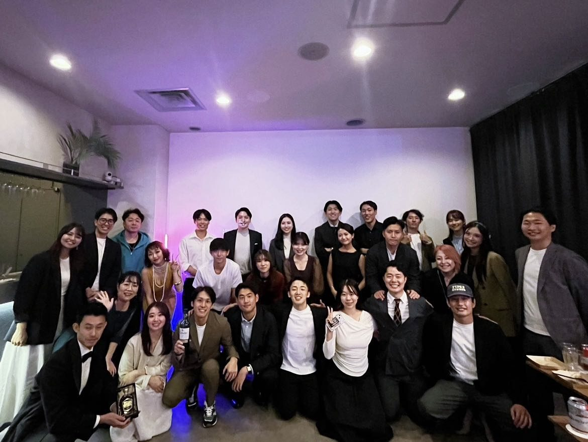
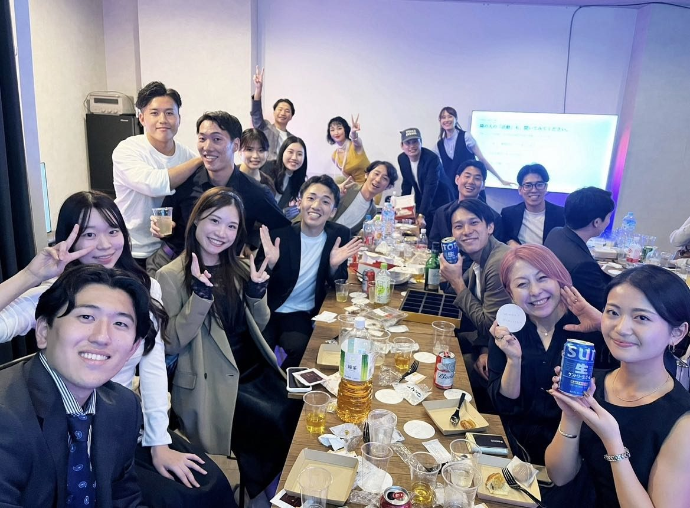
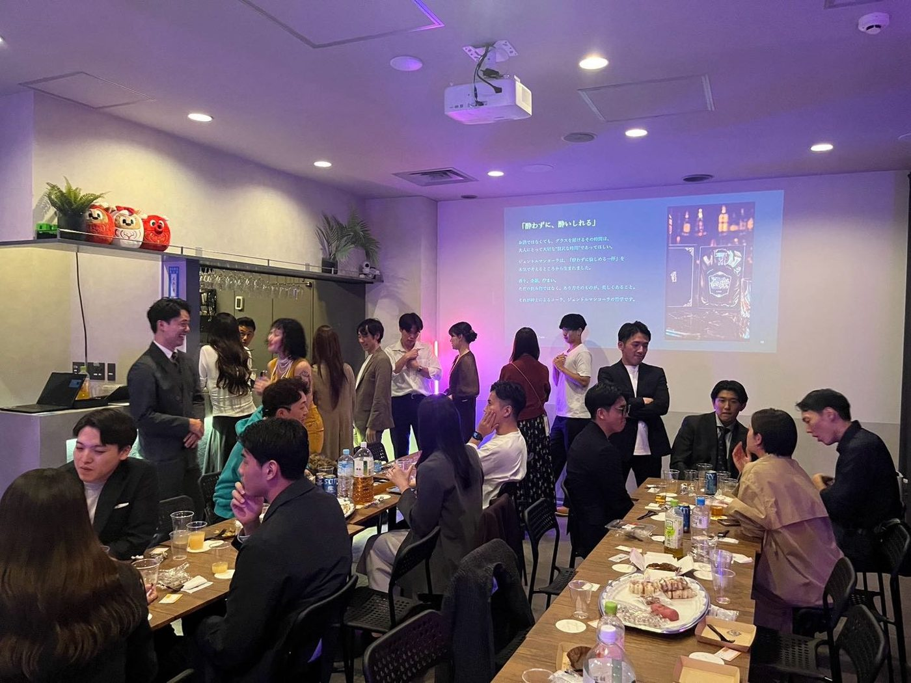

2026.10.03 SAT
会場：東京 ／ ご来場 約30名

「The Table presented byこよりび」を2026年10月3日（土）に開催しました。
ご来場いただいた約30名の皆様、そしてご登壇いただきました皆様、誠にありがとうございました。19歳から60歳以上までの幅広い参加者に皆さまにお越しいただき、存分に楽しんでいただけたと思います。

今回のThe Tableですが、テーマは「全員が主役」でした。肩書や成果だけで評価するのではなく、食卓を囲み、皆を知ることで見えてくるその人のステキなところを讃えあう。登壇者の活動を五感で知り、挑戦を応援する。会が終わる頃には、キラキラした目と笑顔で話し合う参加者の姿があり、まさに全員が主役になっていました。



TheTableで提供する飲食は代表藤田の出身であるサントリーのお酒とまい泉のカツサンドを使用させていただきました。
今後も、人と人がつながるきっかけを作り、優しさや思いやりが循環するコミュニティでありのままを表現する人を一人でも増える社会を目指し活動してまいります。
改めて、「The Table presented byこよりび」にお越しいただきました皆様、ありがとうございました。